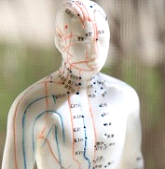

What if I told you that aging doesn't have to be depressing or awful?
Can you imagine feeling enthusiastic about your life as you age?
My name is Linda Kent, and I want to welcome you to my website and
share with you a lot of encouraging information and research, including
four practices that will transition you towards a healthier, happier
perspective of later life.
What if I told you that aging doesn't have to be depressing or awful?
Can you imagine feeling enthusiastic about your life as you age?
My name is Linda Kent, and I want to welcome you to my website and
share with you a lot of encouraging information and research, including
four practices that will transition you towards a healthier, happier
perspective of later life.
The system of Four Practices allows you to view the second cycle of life as a gift of possibilities. You can learn how to feel more energetic and calm while coming to understand how to free yourself to enjoy a happy, creative, more vibrant life.
This system represents a whole-person approach, addressing all aspects of peoples' needs- physical, mental, emotional, spiritual and environmental. Everything is connected.
This site isn't about anti-aging, but rather about how to enjoy and enhance your life at whatever stage you're at now. I look forward to offering on-line classes, private sessions which can be done in person or over the phone with equally effective results, new products, and forwarding a lot of usable information.
Gia Wellness Phone Neutralizers
My family and I have been using cell phone chips for years. People don’t realize the amount of radiation that is emitted from cell phones and the effect it can have on their health. I am especially concerned about the growing number of young children using unprotected cell phones. To learn more, view www.giawellness.com and take a look at the Cell Guard video. If you are interested in purchasing chips, you can go online or call 1-866-999-2747. Either way you will be requested to give this referral number: 40395.
The Four Practices consist of Tong Ren, healthy nutrition, tapping, and the Law of Attraction Principles. These practices will allow you to view this time in your life as one of renewal. The first two practices are forms of Energy Therapy that address the energetic systems of the body.As long as the flow of energy within us continues to circulate without resistance or becoming blocked, the body remains in a balanced state.
Nutrition
Tapping is a form of Energy Psychology often called “acupuncture without needles.” This self-help technique involves tapping on specific points of the body with the fingers to release negative feelings and emotions such as guilt, depression, fear, a sense of being overwhelmed, and grief, all of which can be stored inside the body.
Tong Ren
 Tapping is a form of Energy Psychology often called "acupuncture without needles. " This self-help technique involves tapping on specific points of the body with the fingers to release negative feelings and emotions such as guilt, depression, fear, a sense of being overwhelmed, and grief, all of which can be stored inside the body.
the law of attraction
Understanding and applying Law of Attraction processes and principles allows you to purposefully make desired changes in your life that can contribute to improved health, enriched relationships, a more satisfying career and more. I view the Law of Attraction as a map to the spiritual life that teaches us new ways to deal with adversity, understand the power of gratitude and release negative feelings and patterns. One of the most exciting things about working with the Law of Attraction is learning how to stay in a high vibration state, thus ensuring a life filled with peace and enthusiasm.
Tapping
 Tapping is a form of Energy Psychology often called "acupuncture without needles." This self-help technique involves tapping on specific points of the body with the fingers to release negative feelings and emotions such as guilt, depression, fear, a sense of being overwhelmed, and grief, all of which can be stored inside the body.
Tapping is a form of Energy Psychology often called "acupuncture without needles." This self-help technique involves tapping on specific points of the body with the fingers to release negative feelings and emotions such as guilt, depression, fear, a sense of being overwhelmed, and grief, all of which can be stored inside the body.
As my gift to you, I have included a small document highlighting some of my favorite products and practices. Upon your submission of a valid email, a button will appear to start your download.
If you would like to prepay for services, you may do so at Paypal
Tong-Ren -- $50 per half-hour (most people only need a half-hour session).
Tapping -- $90 per session. Special reduced pricing is available for a 6 session package
Law of Attraction -- $90 per session.
Nutrition -- $90 per session.
Foundational Whole Health Coaching
The philosophy of Foundational Whole Health Coaching maintains that the whole person must be addressed in order to experience sustained energy flow, sustained good health, sustained happiness and sustained peace.
During a session, I follow a specific model that includes asking powerful questions about the emotional, mental, physical, spiritual and environmental aspects of your life. I listen as you tell me your story. Then, almost miraculously, YOU are able to discover the root cause of your issues. As partners in this process, I am thrilled to share the heartfelt energy of joy, gratitude and grace that encompasses us as you gain clarity about who you really are.
Finally, I give you effective tools to use and learn that will allow you to:
- release repetitive, negative thoughts you can't seem to let go of so you can:
- build up inner resilience and move ahead with self-confidence
- balance your parasympathetic nervous system so all systems in your body are calm
- bring more oxygen to your cells and organs through spinal alignment
- reduce inflammation
- strengthen your immune system
- release fear so you can reconnect with the spiritual aspect of yourself
- dissolve cortisol, a stress hormone
- retrain your brain to react differently
- bring a deeper level of consciousness to the surface so joy, peace and appreciation become your automatic states of being
- Be aware of when you're not in alignment and be able to quickly shift into that desired state.
Linda Kent, M.Ed., Nutritional Consultant, Tong Ren Therapist, Meridian Therapy Practitioner and Certified Law of Attraction Coach, is an educator providing you with up-to-date information, research and powerful practices that can change your life.
Linda has studied many healing methods because she believes in addressing the whole person when working with clients. Her non-invasive, gentle yet powerful practices stimulate the body's natural impulses to heal on all levels. She teaches others to sustain this state of mind/body balance, when the body is aligned to recalibrate towards wellness and peace.
Linda facilitates workshops throughout Michigan and is available to teach a variety of wellness topics. She leads weekly Tong Ren healing classes that are open to everyone.